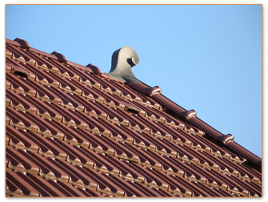

Tisztelt Érdeklődő!
Csősz János tetőfedő-bádogos mester vállalkozó vagyok.
1969 óta dolgozom tetőn. Tetőfedő és bádogos szakmákban letett mestervizsgáim után 1979-ben alapítottam vállalkozásomat.
Az épületek csapadékvíz elvezetése a feladatunk, ennek minőségi kivitelezése változatlan és folyamatos a kezdetektől.
Elsősorban Budapesten és környékén állunk rendelkezésére egyéni megrendelőknek, társasházaknak, közületeknek.
Munkatársaimmal vállaljuk új tetők bármilyen rendszerű (kemény fedés, lágy fedés, lemezfedés) fedését, régi tetők felújítását, javítását, viharkárok elhárítását.
Remélem hamarosan Ön is megrendelőnk lesz.
Jelszavunk: Minőségi munka, elégedett megrendelő, hosszú távú kapcsolat.
Üdvözlettel:
Csősz János tetőfedő-bádogos mester vállalkozó vagyok.
1969 óta dolgozom tetőn. Tetőfedő és bádogos szakmákban letett mestervizsgáim után 1979-ben alapítottam vállalkozásomat.
Az épületek csapadékvíz elvezetése a feladatunk, ennek minőségi kivitelezése változatlan és folyamatos a kezdetektől.
Elsősorban Budapesten és környékén állunk rendelkezésére egyéni megrendelőknek, társasházaknak, közületeknek.
Munkatársaimmal vállaljuk új tetők bármilyen rendszerű (kemény fedés, lágy fedés, lemezfedés) fedését, régi tetők felújítását, javítását, viharkárok elhárítását.
Remélem hamarosan Ön is megrendelőnk lesz.
Jelszavunk: Minőségi munka, elégedett megrendelő, hosszú távú kapcsolat.
Üdvözlettel:
Csősz János